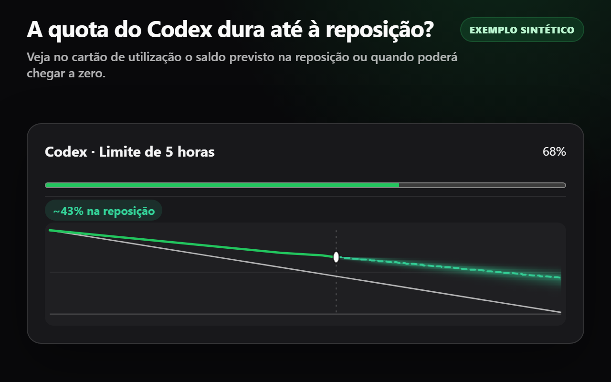
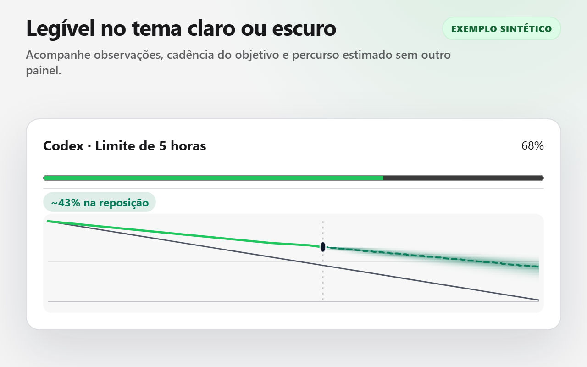
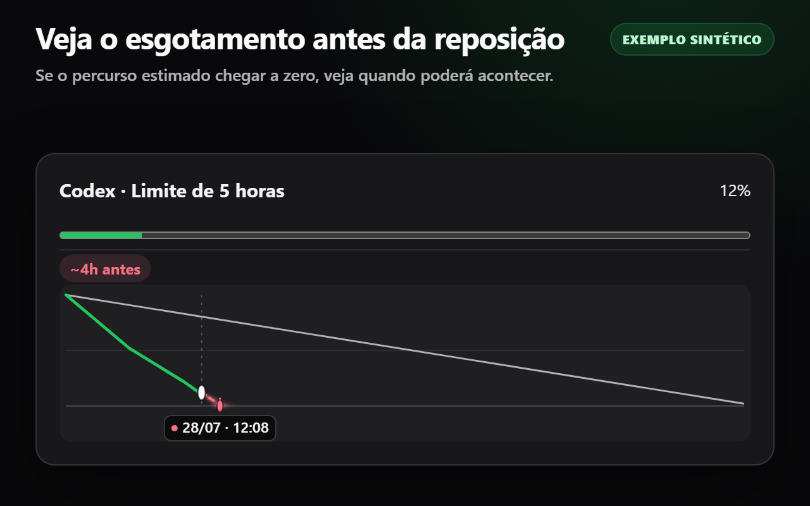
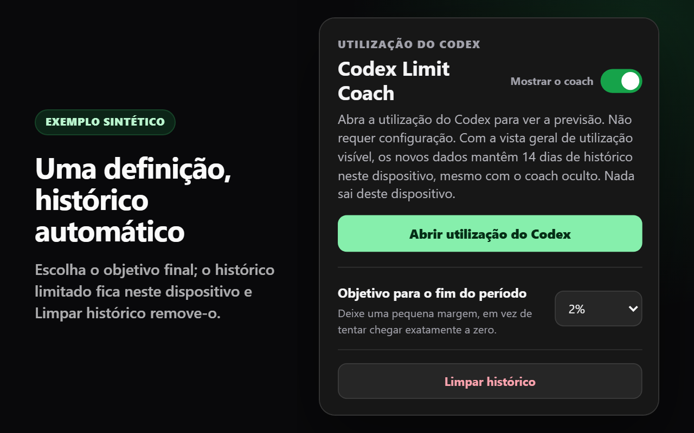

Resultado primeiro
Cada medidor apresenta de forma independente o saldo estimado na reposição ou quando poderá chegar a zero. Nenhum cartão se sobrepõe a outro.
O Codex Limit Coach acrescenta um resultado projetado e uma trajetória local compacta a cada cartão de utilização compatível do Codex.

Veja o saldo projetado na reposição — ou uma hora estimada de esgotamento antecipado — sem abrir outro painel.
Cada medidor apresenta de forma independente o saldo estimado na reposição ou quando poderá chegar a zero. Nenhum cartão se sobrepõe a outro.
A utilização observada determina a previsão. O seu objetivo é uma referência discreta, utilizada apenas para colorir o percurso em relação a um corredor fixo.
Escolha um objetivo para o fim do período. O histórico limitado de 14 dias é automático, fica neste dispositivo e pode ser limpo na janela de pop-up.
Estas imagens executam o código de produção da extensão numa amostra privada e estruturalmente fiel. Não são apresentados dados de conta.




Enquanto o a página de utilização do Codex estiver aberto, o Codex Limit Coach observa passivamente o resultado de quotas que a própria página descodificou com êxito ao lê-lo. Acede apenas aos dados necessários para a previsão: os identificadores estáveis do medidor e do período, a percentagem utilizada, a duração do período e a hora de reposição. Gera localmente a hora da observação e associa os resultados aos cartões nativos apenas através da correspondência do progresso numérico e dos metadados de reposição — nunca através dos rótulos traduzidos nem da ordem dos cartões. As definições e as amostras automáticas limitadas permanecem em chrome.storage.local.
Não inicia outro pedido de rede, não clona nem descodifica a resposta de forma independente, não inspeciona cookies ou cabeçalhos de autorização, não transmite dados de quota nem acede a campos de conta, e-mail, plano, créditos ou controlo de despesas. A única permissão da extensão é storage. Duas declarações de scripts de conteúdo incluídas no pacote partilham dois padrões limitados https://chatgpt.com/codex/* e https://chatgpt.com/settings/usage* para entrada direta e por SPA; o tratamento de dados em tempo de execução e a renderização permanecem nas vistas de utilização compatíveis. Não há contexto em segundo plano, backend, telemetria, publicidade, código remoto nem sistema de contas do Codex Limit Coach.
O Codex Limit Coach é gratuito na Chrome Web Store.